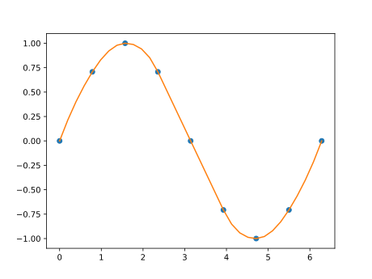
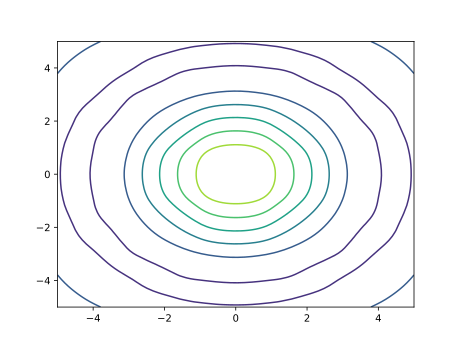
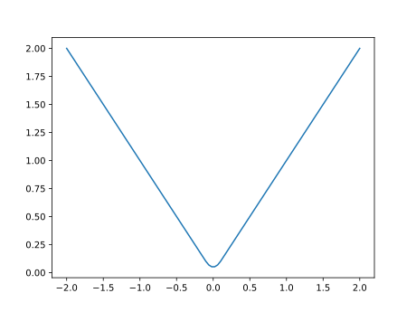
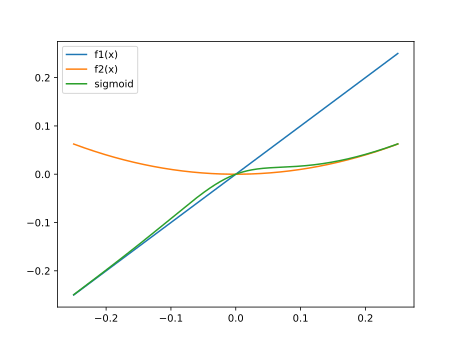
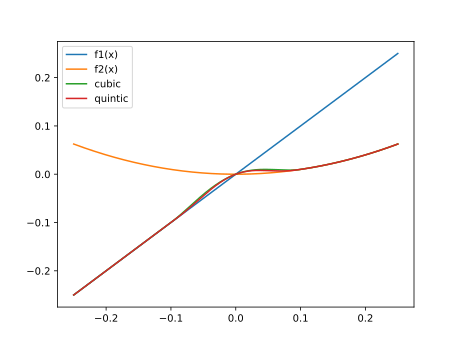

FLOWMath.jl
Examples of the available methods are shown below. More examples are available in the test suite (/test/runtests.jl)
Quadrature
Trapezoidal Integration
This is just simple trapezoidal integration using vectors. Gaussian quadrature is much better, but for times when we need to define a mesh for other purposes and cannot use an adaptive method a simple trapezoidal integration fits the bill.
using FLOWMath: trapz
x = range(0.0, pi+1e-15, step=pi/100)
y = sin.(x)
z = trapz(x, y)1.9998355038874442FLOWMath.trapz — Functiontrapz(x, y)Integrate y w.r.t. x using the trapezoidal method.
Root Finding
Brent's Method (1D functions)
Brent's method is an effective 1D root finding method as it combines bracketing methods (bisection) with fast quadratic interpolation. Thus, you can get near quadratic convergence but with safeguarding.
using FLOWMath: brent
f(x) = x^2 - 1.0
xstar = brent(f, -2.0, 0)-1.0The above example shows basic usage. Additional inputs and outputs are available as described below.
FLOWMath.brent — Functionbrent(f, a, b; args=(), atol=2e-12, rtol=4*eps(), maxiter=100, full_output=false)1D root finding using Brent's method. Based off the brentq implementation in scipy.
Arguments
f: scalar function, that optionally takes additional argumentsa::Float, b::Float`: bracketing interval for a root - sign changes sign between: (f(a) * f(b) < 0)args::Tuple: tuple of additional arguments to pass to fatol::Float: absolute tolerance (positive) for rootrtol::Float: relative tolerance for rootmaxiter::Int: maximum number of iterations allowedfull_output::Bool: flag to indicate whether you want just the root, or the root with a second argument (tuple) containing the number of iterations, function calls, and a convergence message.
Returns
xstar::Float: a root of finfo::Tuple: returned iffull_output=True. A named tuple containing:iter::Int: number of iterations- 'fcalls::Int`: number of function calls
- 'flag::String`: a convergence/error message.
Interpolation
Akima Spline
An Akima spline is a 1D spline that avoids overshooting issues common with many other polynomial splines resulting in a more natural curve. It also only uses local support allowing for more efficient computation.
Interpolation is perhaps clearest through plotting so we'll load a plotting package for this examples.
using PyPlot[ Info: Installing matplotlib via the Conda matplotlib package...
[ Info: Running `conda install -y matplotlib` in root environment
Collecting package metadata (current_repodata.json): ...working... done
Solving environment: ...working... done
## Package Plan ##
environment location: /home/runner/.julia/conda/3
added / updated specs:
- matplotlib
The following packages will be downloaded:
package | build
---------------------------|-----------------
cycler-0.10.0 | py37_0 13 KB
dbus-1.13.12 | h746ee38_0 501 KB
expat-2.2.6 | he6710b0_0 146 KB
fontconfig-2.13.0 | h9420a91_0 227 KB
freetype-2.9.1 | h8a8886c_1 550 KB
glib-2.63.1 | h5a9c865_0 2.9 MB
gst-plugins-base-1.14.0 | hbbd80ab_1 4.8 MB
gstreamer-1.14.0 | hb453b48_1 3.1 MB
icu-58.2 | h9c2bf20_1 10.3 MB
jpeg-9b | h024ee3a_2 214 KB
kiwisolver-1.1.0 | py37he6710b0_0 82 KB
libpng-1.6.37 | hbc83047_0 278 KB
libuuid-1.0.3 | h1bed415_2 15 KB
libxcb-1.13 | h1bed415_1 421 KB
libxml2-2.9.9 | hea5a465_1 1.6 MB
matplotlib-3.1.1 | py37h5429711_0 5.0 MB
pcre-8.43 | he6710b0_0 209 KB
pyparsing-2.4.6 | py_0 64 KB
pyqt-5.9.2 | py37h05f1152_2 4.5 MB
python-dateutil-2.8.1 | py_0 224 KB
pytz-2019.3 | py_0 231 KB
qt-5.9.7 | h5867ecd_1 68.5 MB
sip-4.19.8 | py37hf484d3e_0 274 KB
tornado-6.0.3 | py37h7b6447c_0 584 KB
------------------------------------------------------------
Total: 104.5 MB
The following NEW packages will be INSTALLED:
cycler pkgs/main/linux-64::cycler-0.10.0-py37_0
dbus pkgs/main/linux-64::dbus-1.13.12-h746ee38_0
expat pkgs/main/linux-64::expat-2.2.6-he6710b0_0
fontconfig pkgs/main/linux-64::fontconfig-2.13.0-h9420a91_0
freetype pkgs/main/linux-64::freetype-2.9.1-h8a8886c_1
glib pkgs/main/linux-64::glib-2.63.1-h5a9c865_0
gst-plugins-base pkgs/main/linux-64::gst-plugins-base-1.14.0-hbbd80ab_1
gstreamer pkgs/main/linux-64::gstreamer-1.14.0-hb453b48_1
icu pkgs/main/linux-64::icu-58.2-h9c2bf20_1
jpeg pkgs/main/linux-64::jpeg-9b-h024ee3a_2
kiwisolver pkgs/main/linux-64::kiwisolver-1.1.0-py37he6710b0_0
libpng pkgs/main/linux-64::libpng-1.6.37-hbc83047_0
libuuid pkgs/main/linux-64::libuuid-1.0.3-h1bed415_2
libxcb pkgs/main/linux-64::libxcb-1.13-h1bed415_1
libxml2 pkgs/main/linux-64::libxml2-2.9.9-hea5a465_1
matplotlib pkgs/main/linux-64::matplotlib-3.1.1-py37h5429711_0
pcre pkgs/main/linux-64::pcre-8.43-he6710b0_0
pyparsing pkgs/main/noarch::pyparsing-2.4.6-py_0
pyqt pkgs/main/linux-64::pyqt-5.9.2-py37h05f1152_2
python-dateutil pkgs/main/noarch::python-dateutil-2.8.1-py_0
pytz pkgs/main/noarch::pytz-2019.3-py_0
qt pkgs/main/linux-64::qt-5.9.7-h5867ecd_1
sip pkgs/main/linux-64::sip-4.19.8-py37hf484d3e_0
tornado pkgs/main/linux-64::tornado-6.0.3-py37h7b6447c_0
Downloading and Extracting Packages
expat-2.2.6 | 146 KB | | 0%
expat-2.2.6 | 146 KB | ########## | 100%
libxml2-2.9.9 | 1.6 MB | | 0%
libxml2-2.9.9 | 1.6 MB | ########## | 100%
dbus-1.13.12 | 501 KB | | 0%
dbus-1.13.12 | 501 KB | ########## | 100%
icu-58.2 | 10.3 MB | | 0%
icu-58.2 | 10.3 MB | ########## | 100%
qt-5.9.7 | 68.5 MB | | 0%
qt-5.9.7 | 68.5 MB | #1 | 12%
qt-5.9.7 | 68.5 MB | ### | 31%
qt-5.9.7 | 68.5 MB | #####1 | 51%
qt-5.9.7 | 68.5 MB | #######2 | 72%
qt-5.9.7 | 68.5 MB | #########3 | 94%
qt-5.9.7 | 68.5 MB | ########## | 100%
kiwisolver-1.1.0 | 82 KB | | 0%
kiwisolver-1.1.0 | 82 KB | ########## | 100%
pcre-8.43 | 209 KB | | 0%
pcre-8.43 | 209 KB | ########## | 100%
freetype-2.9.1 | 550 KB | | 0%
freetype-2.9.1 | 550 KB | ########## | 100%
fontconfig-2.13.0 | 227 KB | | 0%
fontconfig-2.13.0 | 227 KB | ########## | 100%
pyqt-5.9.2 | 4.5 MB | | 0%
pyqt-5.9.2 | 4.5 MB | ########## | 100%
libxcb-1.13 | 421 KB | | 0%
libxcb-1.13 | 421 KB | ########## | 100%
libpng-1.6.37 | 278 KB | | 0%
libpng-1.6.37 | 278 KB | ########## | 100%
sip-4.19.8 | 274 KB | | 0%
sip-4.19.8 | 274 KB | ########## | 100%
tornado-6.0.3 | 584 KB | | 0%
tornado-6.0.3 | 584 KB | ########## | 100%
gst-plugins-base-1.1 | 4.8 MB | | 0%
gst-plugins-base-1.1 | 4.8 MB | ########## | 100%
glib-2.63.1 | 2.9 MB | | 0%
glib-2.63.1 | 2.9 MB | ########## | 100%
jpeg-9b | 214 KB | | 0%
jpeg-9b | 214 KB | ########## | 100%
python-dateutil-2.8. | 224 KB | | 0%
python-dateutil-2.8. | 224 KB | ########## | 100%
cycler-0.10.0 | 13 KB | | 0%
cycler-0.10.0 | 13 KB | ########## | 100%
libuuid-1.0.3 | 15 KB | | 0%
libuuid-1.0.3 | 15 KB | ########## | 100%
matplotlib-3.1.1 | 5.0 MB | | 0%
matplotlib-3.1.1 | 5.0 MB | ########## | 100%
pytz-2019.3 | 231 KB | | 0%
pytz-2019.3 | 231 KB | ########## | 100%
gstreamer-1.14.0 | 3.1 MB | | 0%
gstreamer-1.14.0 | 3.1 MB | ########## | 100%
pyparsing-2.4.6 | 64 KB | | 0%
pyparsing-2.4.6 | 64 KB | ########## | 100%
Preparing transaction: ...working... done
Verifying transaction: ...working... done
Executing transaction: ...working... doneusing FLOWMath: akima, Akima
x = 0:pi/4:2*pi
y = sin.(x)
xpt = 0:pi/16:2*pi
ypt = akima(x, y, xpt)
figure()
plot(x, y, "o")
plot(xpt, ypt)
or if you plan to evaluate the spline repeatedly
spline = Akima(x, y)
ypt = similar(xpt)
ypt .= spline.(xpt) # ypt change in place
ypt = spline(xpt)FLOWMath.Akima — TypeAkima(xdata, ydata, delta_x=0.0)Creates an akima spline at node points: xdata, ydata. This is a 1D spline that avoids overshooting issues common with many other polynomial splines resulting in a more natural curve. It also only depends on local points (i-2...i+2) allow for more efficient computation. delta_x is the half width of a smoothing interval used for the absolute value function. Set delta_x=0 to recover the original akima spline. The smoothing is only useful if you want to differentiate xdata and ydata. In many case the nodal points are fixed so this is not needed. Returns an akima spline object (Akima struct). This function, only performs construction of the spline, not evaluation. This is useful if you want to evaluate the same mesh at multiple different conditions. A convenience method exists below to perform both in one shot.
FLOWMath.akima — Functionakima(x, y, xpt)A convenience method to perform construction and evaluation of the spline in one step. See docstring for Akima for more details.
Arguments
x, y::Vector{Float}: the node pointsxpt::Vector{Float} or ::Float: the evaluation point(s)
Returns
ypt::Vector{Float} or ::Float: interpolated value(s) at xpt using akima spline.
2D/3D/4D Interpolation using Recursive 1D Interpolation
The functions interp2d, interp3d, and interp4d are generic and will accept any method that performs 1D interpolation as the first argument. In the below examples, akima is used. These examples are based off of examples from Matlab's interpn documentation.
2D:
using FLOWMath: interp2d
x = -5.0:5.0
y = -5.0:5.0
z = zeros(11, 11)
for i = 1:11
for j = 1:11
v = sqrt(x[i]^2 + y[j]^2) + 1e-15
z[i, j] = sin(v) / v
end
end
xpt = range(-5.0, 5.0, length=100)
ypt = range(-5.0, 5.0, length=100)
zpt = interp2d(akima, x, y, z, xpt, ypt)
figure()
contour(xpt, ypt, zpt)
4D:
using FLOWMath: interp4d
x = -1:0.2:1
y = -1:0.2:1
z = -1:0.2:1
t = 0:2:10.0
nx = length(x)
ny = length(y)
nz = length(z)
nt = length(t)
f = Array{typeof(x[1])}(undef, nx, ny, nz, nt)
for i = 1:nx
for j = 1:ny
for k = 1:nz
for l = 1:nt
f[i, j, k, l] = t[l]*exp(-x[i]^2 - y[j]^2 - z[k]^2)
end
end
end
end
xpt = -1:0.05:1
ypt = -1:0.08:1
zpt = -1:0.05:1
tpt = 0:0.5:10.0
fpt = interp4d(akima, x, y, z, t, f, xpt, ypt, zpt, tpt)FLOWMath.interp2d — Functioninterp2d(interp1d, xdata, ydata, fdata, xpt, ypt)
2D interpolation using recursive 1D interpolation. This approach is likely less efficient than a more direct 2D interpolation method, especially one you can create separate creation from evaluation, but it is generalizable to any spline approach and any dimension.
Arguments
interp1d: any spline function of form: ypt = interp1d(xdata, ydata, xpt) where data are the known data(node) points and pt are the points where you want to evaluate the spline at.xdata::Vector{Float},ydata::Vector{Float}: Define the 2D gridfdata::Matrix{Float}: where fdata[i, j] is the function value at xdata[i], ydata[j]xpt::Vector{Float},ypt::Vector{Float}: the locations where you want to evaluate the spline
Returns
fhat::Matrix{Float}: where fhat[i, j] is the estimate function value at xpt[i], ypt[j]
FLOWMath.interp3d — Functioninterp3d(interp1d, xdata, ydata, zdata, fdata, xpt, ypt, zpt)Same as interp2d, except in three dimension.
FLOWMath.interp4d — Functioninterp4d(interp1d, xdata, ydata, zdata, fdata, xpt, ypt, zpt)Same as interp3d, except in four dimensions.
Smoothing
Absolute value
The absolute value function is not differentiable at x = 0. The below function smoothly adds a small quadratic function in place of the cusp with a half-width given by delta_x. This small rounding at the bottom can prevent numerical issues with gradient-based optimization.
using FLOWMath: abs_smooth
x = range(-2.0, 2.0, length=100)
delta_x = 0.1
y = abs_smooth.(x, delta_x)
using PyPlot
figure()
plot(x, y)
FLOWMath.abs_smooth — Functionabs_smooth(x, delta_x)Smooth out the absolute value function with a quadratic interval. delta_x is the half width of the smoothing interval. Typically usage is with gradient-based optimization.
Kreisselmeier-Steinhauser Constraint Aggregation Function
The Kreisselmeier-Steinhauser (KS) function is often used with constrained gradient-based optimization problems to smoothly aggregate an arbitrary number of constraints into a single constraint. It may also be used as a smooth approximation of the maximum function (or minimum function). A salient feature of this function is that it is guaranteed to overestimate the maximum function (or underestimate the minimum function). This feature of the function can be used to ensure that the resulting constraint is conservative.
We provide two implementations of this function: ksmax and ksmin. ksmax and ksmin may be used to smoothly approximate the maximum and minimum functions, respectively. Both functions take the optional parameter hardness that controls the smoothness of the resulting function. As hardness increases the function more and more closely approximates the maximum (or minimum) function.
using FLOWMath: ksmax, ksmin
x = [1.2, 0.0, 0.5]
hardness = 100
max_x = ksmax(x, hardness)1.2min_x = ksmin(x, hardness)-0.0FLOWMath.ksmax — Functionksmax(x, hardness=50)Kreisselmeier–Steinhauser constraint aggregation function. In the limit as hardness goes to infinity the maximum function is returned. Is mathematically guaranteed to overestimate the maximum function, i.e. maximum(x) <= ksmax(x, hardness).
FLOWMath.ksmin — Functionksmin(x, hardness=50)Kreisselmeier–Steinhauser constraint aggregation function. In the limit as hardness goes to infinity the minimum function is returned. Is mathematically guaranteed to underestimate the minimum function, i.e. minimum(x) <= ksmin(x, hardness).
Blending functions using the sigmoid function
The sigmoid function may be used to smoothly blend the results of two continuous one-dimensional functions. The method implemented in this package uses a user-specified transition location (xt) and scales the input of the sigmoid function using the input hardness in order to adjust the smoothness of the transition between the two functions.
using FLOWMath: sigmoid_blend
x = 0.1
f1x = x
f2x = x^2
xt = 0.0
hardness = 100
y = sigmoid_blend(f1x, f2x, x, xt, hardness)0.010004085808183225sigmoid_blend can also be used with vector inputs using broadcasting.
x = -0.25:0.01:0.25
f1x = x
f2x = x.^2
xt = 0.0
hardness = 100
y = sigmoid_blend.(f1x, f2x, x, xt, hardness)
using PyPlot
figure()
plot(x, y)
FLOWMath.sigmoid_blend — Functionsigmoid_blend(f1x, f2x, x, xt, hardness=50)Smoothly transitions the results of functions f1 and f2 using the sigmoid function, with the transition between the functions located at xt. hardness controls the sharpness of the transition between the two functions.
Blending functions using cubic or quintic polynomials
Cubic or quintic polynomials can also be used to construct a piecewise function that smoothly blends two functions. The advantage of this approach compared to sigmoid_blend is that the blending can be restricted to a small interval defined by the half-width delta_x. The disadvantage of this approach is that the resulting function is only C1 continuous when cubic_blend is used, and C2 continuous when quintic_blend is used. The method implemented in this package uses a user-specified transition location (xt). The smoothness of the transition between the two functions can be adjusted by modifying delta_x, which is the half-width of the transition interval.
using FLOWMath: cubic_blend, quintic_blend
x = 0.05
f1x = x
f2x = x^2
xt = 0.0
delta_x = 0.1
y1 = cubic_blend(f1x, f2x, x, xt, delta_x)
y2 = quintic_blend(f1x, f2x, x, xt, delta_x)0.007416992187499999cubic_blend and quintic_blend can also be used with vector inputs using broadcasting.
x = -0.25:0.01:0.25
f1x = x
f2x = x.^2
xt = 0.0
delta_x = 0.1
y1 = cubic_blend.(f1x, f2x, x, xt, delta_x)
y2 = quintic_blend.(f1x, f2x, x, xt, delta_x)
using PyPlot
figure()
plot(x, y1)
plot(x, y2)
legend(["cubic", "quintic"])
FLOWMath.cubic_blend — Functioncubic_blend(f1x, f2x, x, xt, delta_x)Smoothly transitions the results of functions f1 and f2 using a cubic polynomial, with the transition between the functions located at xt. delta_x is the half width of the smoothing interval. The resulting function is C1 continuous.
FLOWMath.quintic_blend — Functionquintic_blend(f1x, f2x, x, xt, delta_x)Smoothly transitions the results of functions f1 and f2 using a quintic polynomial, with the transition between the functions located at xt. delta_x is the half width of the smoothing interval. The resulting function is C2 continuous.